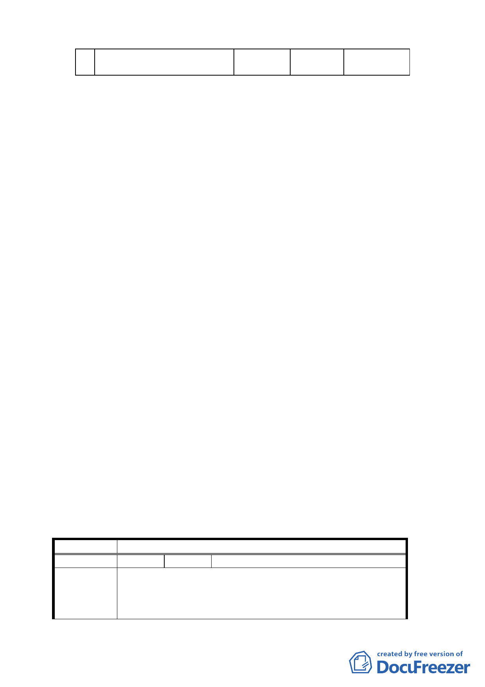

合
計
--
六、 本案審議歷程：
-- -- 8.87
1. 市府（都市發展局）於 94 年 4 月 12 日起公開展覽 30 天。
2. 94 年 6 月 8 日本會第 543 次委員會議決議組成專案小組，
94 年 7 月 20 日辦理現場會勘，接續召開五次專案小組會
議。提報兩次大會（95 年 11 月 23 日、12 月 7 日）審議。
3. 市府（都市發展局）依據歷次會議決議彙整相關單位意見
及補充會議資料於 96 年 9 月 28 日函送本會，於 96 年 10
月 19 日、97 年 3 月 31 日召開兩次討論會，並由市府（都
市發展局）統整回應資料並修正計畫書內容後，提送委員
會大會審議。
七、 公民或團體所提意見：共 9 件（詳後附錄：綜理表）。
決議：
1.本案有關土地權屬疑義之處理已超越本會審議權責，如有
涉及過去歷史背景因素而影響相關當事人之權益，應另循
法律途徑解決。
2.案內元利建設股份有限公司對西北側基地保護區私地主權
益之保障與承諾事項，納入主要計畫說明書內容予以規範。
3.有關北側基地右邊劃設之住宅區，為避免日後興建高度與
鄰近國小用地、再興中學建築，難以相容或協調，其高度
限制之規範，建議「臺北市都市設計及土地使用開發許可
審議委員會」於後續審議時，妥適處理。
4.餘依市府補充資料及簡報資料等修正內容，照案通過。
5. 有關公民或團體陳情意見決議情形詳如綜理表。
臺北市都市計畫委員會公民或團體所提意見綜理表
案 名 變更臺北市文山區木柵路一段中興山莊附近地區主要計畫案
編號
陳情理由
１ 陳情人 吳哲 等 11 人
1. 民等坐落文山區華興段 1 小段 152、155、156、162 等地號土
地於民國 56 年編訂為機關用地，民國 75 年政府全面徵收公共
設施保留地，民等土地未依法徵收，且於通盤檢討細部計劃變
更為「行政區」其土地亦受到使用分區限制（未臨馬路及無細
18